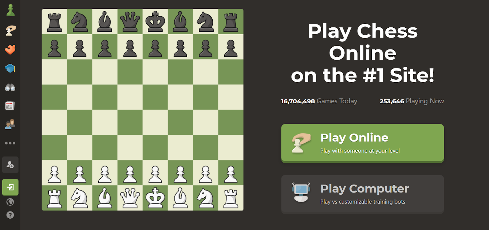
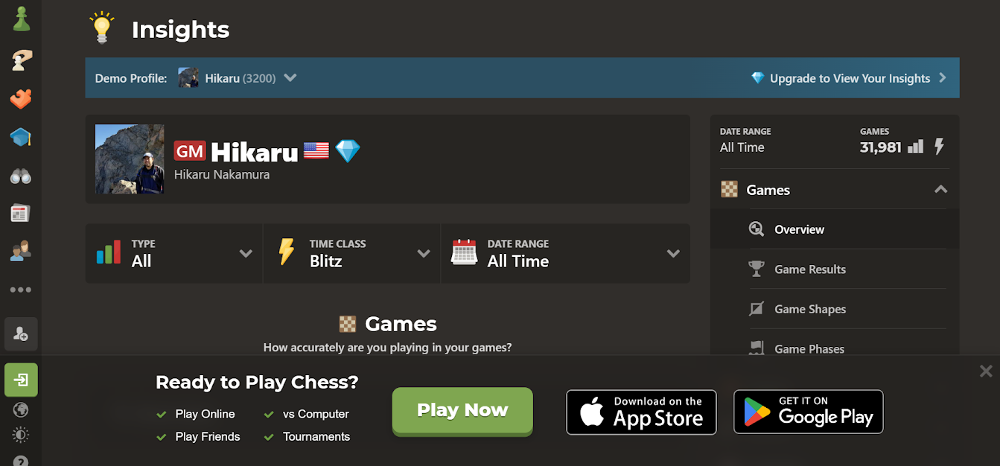
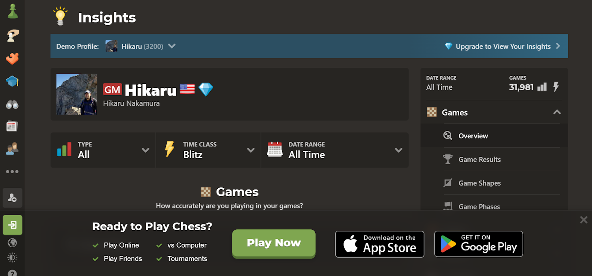
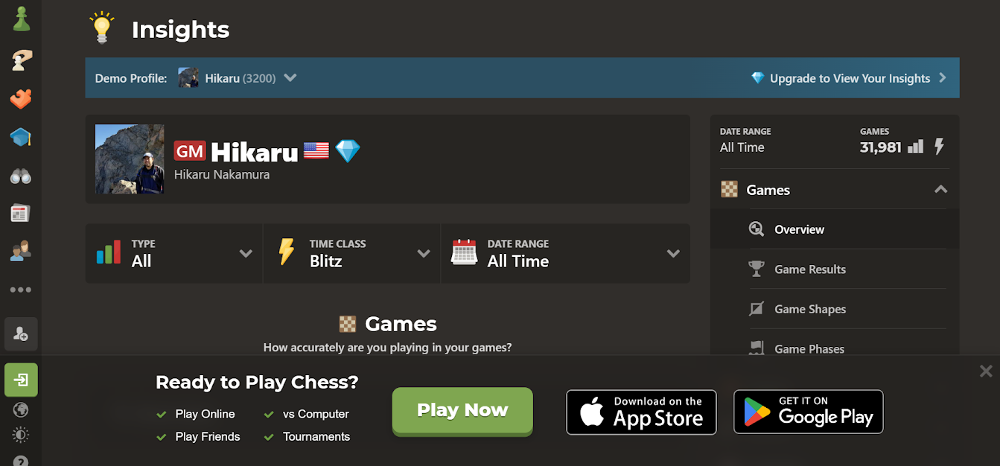
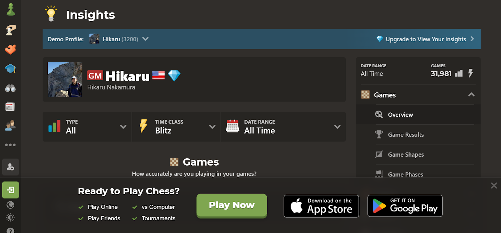

 



| 1. What is the URL of the site? | 2. What is the purpose of the site? | 3. Who is the intended audience? | 4. Do you think that the site reaches its intended audience? Why or why not? |
| 5. Is the site useful to you? Why or why not? | 6. Does this site appeal to you? Why or why not? Consider the use of color, images, multimedia, organization, and ease of navigation. | 7. Would you encourage others to visit this site? Why or why not? | 8. How could this site be improved? |
